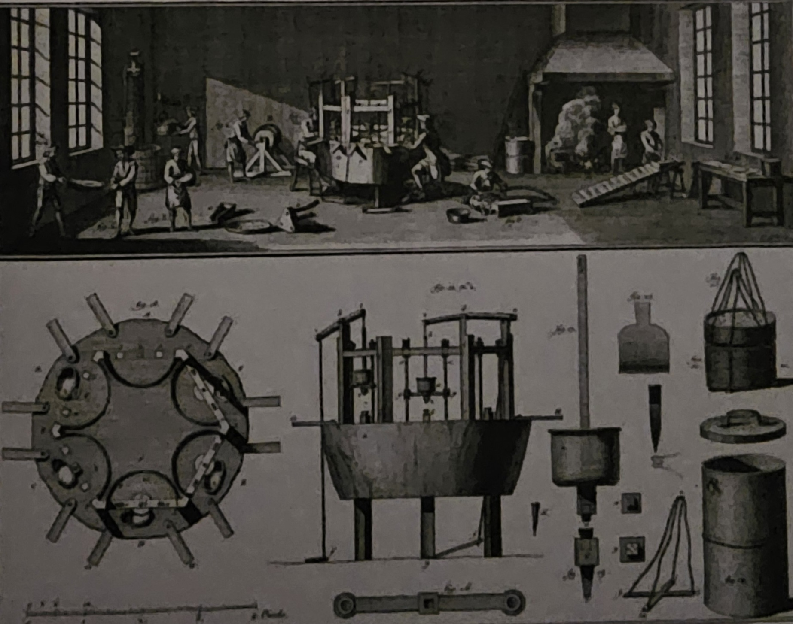

LA NASCITA DELLE FABBRICHECon l'evoluzione industriale, le macchine crescevano in dimensioni e numero, spingendo alla creazione di fabbriche, superando la capacità delle abitazioni operaie. Questo cambio favorì il passaggio dal lavoro a domicilio a quello di fabbrica, più efficiente e conveniente. Inizialmente, le fabbriche utilizzavano l'energia idraulica e necessitavano di essere vicine a fiumi o torrenti. Solo con l'adozione diffusa del vapore, la vicinanza all'acqua non fu più essenziale, permettendo la produzione di energia in qualsiasi luogo e stagione. Nonostante ciò, le fabbriche preferivano posizionarsi vicino ai giacimenti di carbone, essenziale per alimentare le macchine a vapore, che erano abbondanti in Inghilterra. IL LAVORO DI FABBRICA È PIÙ EFFICIENTE…Prima della rivoluzione industriale, gli oggetti di uso quotidiano erano artigianalmente prodotti in modo indipendente, offrendo varietà ma con limitata produzione. Con l'avvento delle fabbriche, la produzione si trasformò attraverso la divisione del lavoro. Ogni fase del processo fu assegnata a diversi lavoratori, aumentando l'efficienza. L'esempio di Adam Smith sulla produzione di spilli illustra questo cambiamento: in una fabbrica, diciotto operai eseguivano operazioni specifiche, consentendo una produzione su larga scala e generando profitti significativi per i proprietari. La divisione del lavoro divenne centrale nella nuova dinamica industriale. 
… MA È DURO E MAL PAGATONelle fabbriche durante la rivoluzione industriale, i lavoratori erano sottoposti a una disciplina rigorosa con orari di lavoro imposti dalle macchine e dagli orologi. Operai e operaie erano soggetti al controllo costante dei sorveglianti e temevano severe multe. I salari erano bassi, e donne e bambini, pur affrontando pesanti turni, erano pagati notevolmente meno degli uomini. Nelle miniere, dove la richiesta di carbone e metalli era in continua crescita, le condizioni erano ancora più difficili. Gli uomini scavavano, mentre donne e bambini trasportavano i minerali attraverso stretti cunicoli, esponendosi a frequenti incidenti come crolli, allagamenti ed esplosioni di gas (il grisou). LE CITTÀ INDUSTRIALI CRESCONO DISORDINATAMENTEDurante i primi tempi della rivoluzione industriale, molti lavoratori migrarono dalle campagne alle città in cerca di lavoro, causando un rapido e disordinato sviluppo urbano. Nei quartieri vicino alle fabbriche, furono costruiti in fretta alloggi precari, dalla semplice baracca a case piccole e malsane, sovraffollate dalle intere famiglie.Le condizioni igieniche erano disastrose, con l'aria inquinata dalle emissioni industriali, mancanza di acqua potabile e assenza di fognature. Le strade non selciate accumulavano sporcizia e liquami, facilitando la diffusione di malattie infettive Le malattie infettive, o infezioni, sono causate da agenti patogeni come batteri, virus, funghi o parassiti. Questi agenti patogeni possono entrare nel corpo umano e causare disturbi o malattie attraverso varie modalità, come il contatto diretto con una persona infetta, l'ingestione di cibi o acqua contaminati, punture di insetti vettori, o l'esposizione a superfici contaminate (es: vaiolo, tifo, scarlattina e tubercolosi).. La mortalità era elevata, con una durata media della vita di soli 18 anni per le classi lavoratrici a Liverpool nel 1842. Circa la metà dei bambini nati in città moriva prima dei 5 anni, e quelli che sopravvivevano erano spesso malnutriti, con frequenti casi di rachitismo e gravi malformazioni ossee.  |
 |